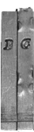
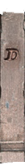
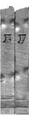
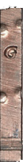
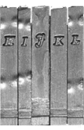
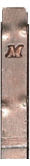
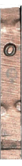
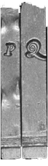

Labore et Constantia Christophe Plantin was a French Renaissance humanist and a renowned book printer and publisher. He established one of the most influential publishing houses of his time in Antwerp, transforming the city into a leading center of European book production. Plantin's legacy extends far beyond his impressive body of work. His printing house, the Plantin Press, continued to operate for generations, and today, the Plantin-Moretus Museum in Antwerp, a UNESCO World Heritage Site, stands as a testament to his enduring contribution to the world of printing and publishing.
The Art of Typography Plantin championed the use of high-quality typefaces, recognizing their crucial role in enhancing readability and the overall aesthetic appeal of his books. He drew inspiration from classical Roman inscriptions and Renaissance humanism, striving for typefaces that were both elegant and legible.
Typing Quest: Try to guess and type the name of the group of typefaces which named for sixteenth-century engraver. Plantin used it in his production of famous Polyglot Bible. Tip: Use colourful punches         Press the colourful punches to fill in the answer ? ? ? ? ? ? ? ?
And the answer is... Plantin invested heavily in the creation of new typefaces. Skilled artisans, called punchcutters, meticulously carved the shape of each letter into a steel punch. This punch was then used to create a matrix, which served as the mold for casting individual letters of type. The Plantin Polyglot Bible, with its multiple languages (Hebrew, Greek, Latin, and Aramaic), demanded a diverse range of typefaces. For this ambitious project, Plantin collaborated with renowned French type designer Claude Garamond. Garamond provided the steel punches for many of the characters used in the Bible, ensuring the highest quality and aesthetic standards for this monumental work.
A Master of Craftsmanship Plantin was celebrated for his meticulous attention to detail, producing books of exceptional quality with exquisite typography, careful editing, and stunning illustrations. He employed some of the most talented artists of his time, including the renowned engraver, Johannes Wierix. Wierix brought a new level of artistry to Plantin's books. His engravings were characterized by intricate detail, dynamic composition, and expressive power. He mastered the technique of copper engraving, which involved carefully carving intricate patterns into metal plates.
Engraving techniques Engraver made his images using an impression on paper (in a mirror form) from a printing plate — a "board" made of metal with an in-depth (engraved) pattern applied to such a form. With a hardened steel tool called a drill or engraver to carve a pattern on a surface. The greatest merit of his publishing house is also the use of copper engravings and the spread of this method in Holland and other European countries. In Italy, copper engraving has been known since the 50s of the XVI century. But Plantin's prints were better: featuring Wierix's engravings, became renowned for their high quality and artistic merit, contributing to the spread of this technique throughout Europe. Engraving tools (click on tool to know more)
Woodblocks In contrast to copper engraving, woodcut involves applying contours and strokes with ink, and then cutting off each stroke on both sides to a depth of 2-8 mm with a knife. In between, the wood was selected with a chisel. Woodcuts were typically created on blocks of softer woods like pear or linden, with the grain direction often influencing the direction of the lines. After carving, the board was rolled up with paint and the impression was transferred to paper. The Plantin-Moretus Museum has an extraordinary collection of 14,000 woodblocks. 14,000 examples of true craftmanship, drawings masterly cut in wood.
Woodblock workshop 1. Draw the picture for your woodblock inside the canvas. 2. Your drawing will be engraved with our special tool. 3. Watch your design becoming the piece of printed art. Draw your woodblock design: Engraving your woodblock... Your printed illustration is ready! Done Drawing